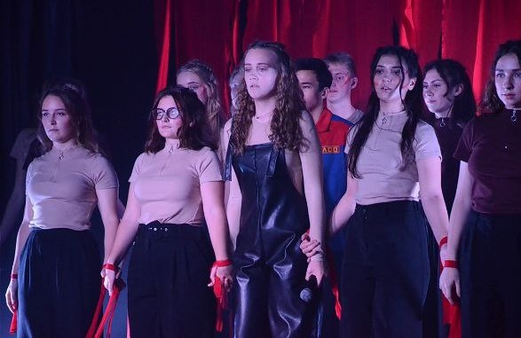

«Горро» — студенческий туристско-педагогический отряд, первый за Уралом. Основан в 2015 году.
Это инструктора, руководители, вожатые и просто неземные люди ♡
Каждый в отряде талантлив - среди нас есть ораторы, музыканты, композиторы, танцоры, поэты. Мы все связаны одним делом, любовью к горам, путешествиям и детям ♡
Горы в душе, дети в сердце! И напоследок хочу сказать, что Горрчик- звучит гордо!
